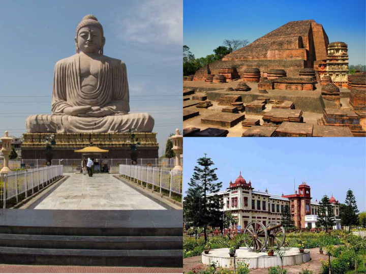
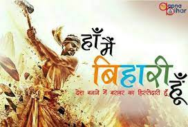

Apna Bihar


About Bihar
Bihar:-(/bɪˈhɑːr/; Hindi pronunciation: [bɪˈɦaːr] ⓘ) is a state in eastern India.
It is the third largest state by population, the 12th largest by area, and the
14th largest by GDP in 2021.[9][10][11] Bihar borders Uttar Pradesh to its west,
Nepal to the north, the northern part of West Bengal to the east, and Jharkhand to the south.
The Bihar plain is split by the river Ganges, which flows from west to east.[12]
On 15 November 2000, southern Bihar was ceded to form the new state of Jharkhand.[13] Only
11.27% of the population of Bihar lives in urban areas as per a 2020 report.[14] Additionally,
almost 58% of Biharis are below the age of 25, giving Bihar the highest proportion of young people
of any Indian state.[15] The official language is Hindi and additional official language is Urdu,
although other languages are common, including Maithili, Magahi, Bhojpuri, and other Languages of Bihar
History:- on the northern bank of the Ganga River, in Saran district, has an archaeological record from the Neolithic
age (c. 2500–1345 BCE).[31][32] Regions of Bihar – such as Magadha, Mithila, and Anga – are mentioned in
religious texts and epics of ancient India.
Mithila gained prominence after the establishment of the Videha Kingdom.[33][34] During the late Vedic
period (c. 1100–500 BCE), Videha became one of the major political and cultural centers of South Asia,
along with Kuru and Pañcāla. The kings of the Videha Kingdom were called Janakas.[35] Sita, a daughter
of one of the Janaks of Mithila is mentioned as the consort of Lord Rama, in the Hindu epic Ramayana, written by Valmiki.